Сборки и прокачка
Порядок улучшения способностей
Так выглядит порядок улучшения:
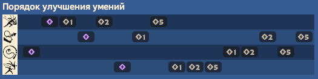
- В начале прокачиваем 3-ий, чтобы в начальной игре не проседать по здоровью
- Далее необходимо прокачать 1-ый и улучшить до 2 уровня, чтобы в ранней игре создать доминацию
- Перед том как замаксить 1 скилл, прокачаем 2-ой, чтобы улучишть мобильность
- После того как улучшим 1-ый скилл на максимум, прокачиваем ульту до 3-го уровня, что позволит выигрывать командные драки
- Далее прокачиваем 3-ий и 2-ой до конца, по ситуации
Рекомендуемые предметы:
| Ранняя игра | Середина игры | Поздняя игра | Предметы по ситуации |
|---|---|---|---|
| 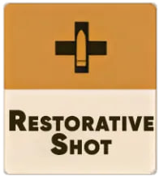 | 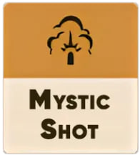 | 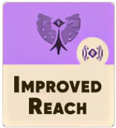 | 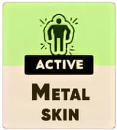 |
| 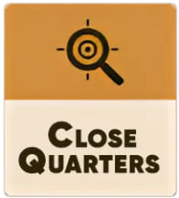 | 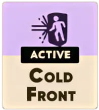 | 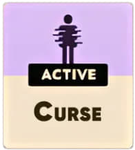 | 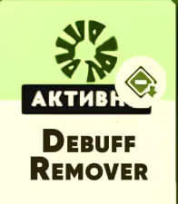 |
| 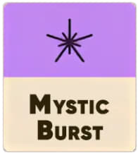 | 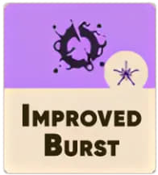 | 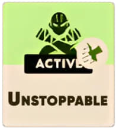 | 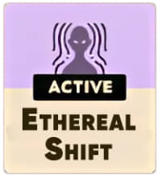 |
| 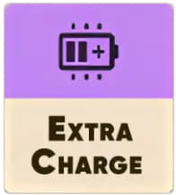 | 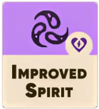 | 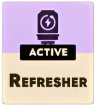 | 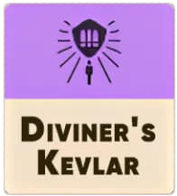 |
| 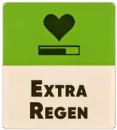 | 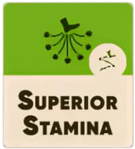 | 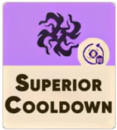 | 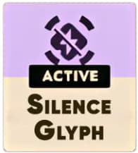 |
| 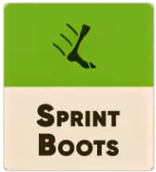 | 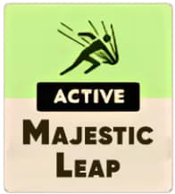 | 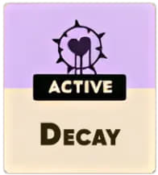 | |
| 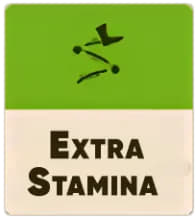 | 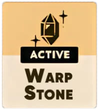 | 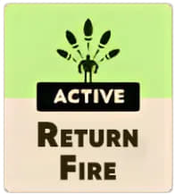 | |
| 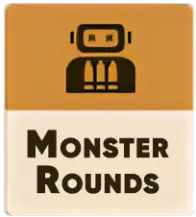 | 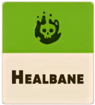 | 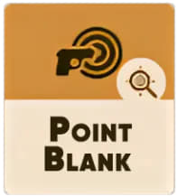 | |